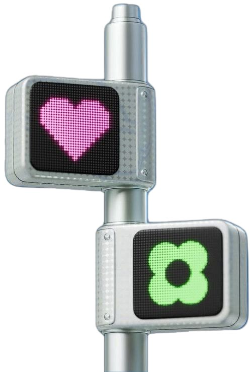
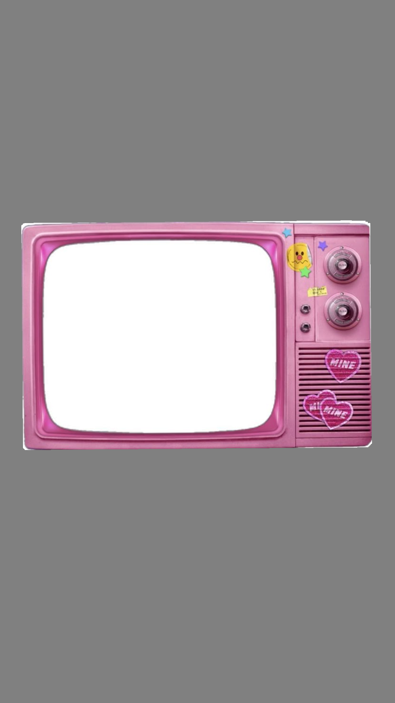
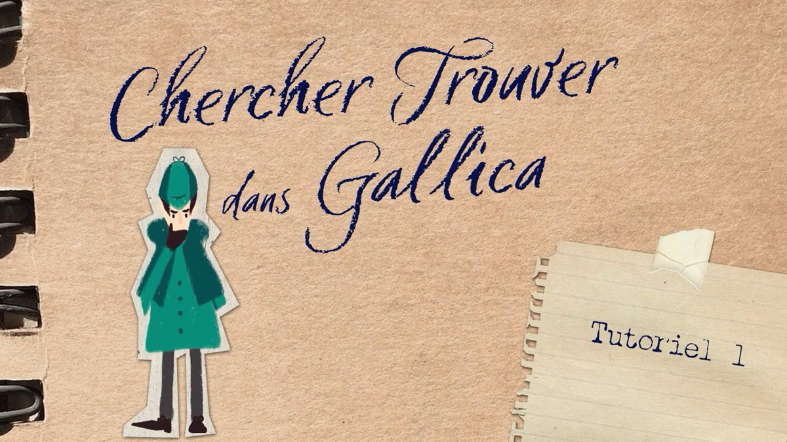

Le carnet en quatre gestes

Tutoriel illustré · 28 secondes
Choisis une lecture, surligne un passage et garde-le dans ton carnet.
Lire les étapes de la vidéo
- Cherche un titre ou un auteur, puis ouvre la fiche du livre.
- Ouvre le lecteur PDF. Sélectionne le texte ou utilise l’outil Zone.
- Ajoute le passage et la page à ta fiche de lecture.
- Dans Mes surlignages, choisis un passage pour revenir à la page.
Tutoriels sur le site
Parcourir les genres et sous-genres

Bibliothèque nationale de France · 5 min
Sur les traces des Trois Mousquetaires
Tutoriel vidéo de la BnF ↗ Explorer Gallica ↗